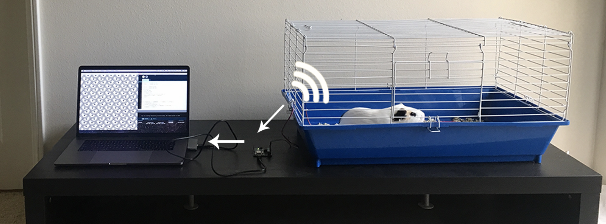

2017 | Arduino + Processing

This project collects animals’ emotions by detecting and recording their heartbeat and body temperature using a Pulse sensor and a TMP93 sensor and visualizes these data into nine designed patterns based on the abstract shapes and lines of each animal’s skins.
The first “heart” in the name of this project, Heart to Heart, represents the human heart, while the second one is regarded as animals’ hearts. The concept of the project is to remind us to treat animals as intellectual beings that are on the same level as humans and not some lower form of life that need our pity.

• Materials: pulse sensor kits, Arduino Uno Boards, TMP39 sensor, battery
• Pattern design and measurements
• Pattern code writing (Java Processing)
• Prototype making
• Testing on Guinea pig
• Pattern printing
• 9 Girds structure display


Let's start concerning about how animals feel and think.